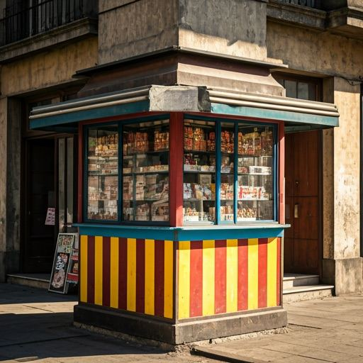

Monte le son : touche les bulles pour entendre Buenos Aires.
Comment ça marche
Quinze minutes. Et tu es actif du début à la fin.
Chaque leçon tient dans une pause café et enchaîne de petites étapes rapides. Pas de pavés de grammaire à faire défiler : tu apprends en faisant quelque chose toutes les quelques secondes.
¡Muy bien! ¿Vos de dónde sos? Et voilà Lucho qui te pose la même question.
Essaie · une vraie étape
Termine la phrase
« Tu viens d’où ? »
¿Vosdedónde
Touche le mot qui termine la question. À Buenos Aires, on dit « vos sos », pas « tú eres ».
Choisir
Choisis le bon mot, la bonne forme ou la bonne réponse — et vois tout de suite pourquoi.
Associer
Relie les mots à leur sens, à des images et à leur version porteña.
Construire des phrases
Assemble de vraies phrases pièce par pièce, jusqu’à ce que l’ordre des mots devienne naturel.
Écouter
Chaque réplique est enregistrée en espagnol rioplatense : ton oreille apprend le rythme et le « ch » du Río de la Plata.
Jouer la scène
Commande au café, prends un bondi, discute avec un voisin — tu réponds, on te répond.
Parler
Dis-le à voix haute et vérifie ta prononciation, si tu actives les exercices oraux.
L’histoire
Tu viens d’emménager dans un immeuble de Palermo. Voici les voisins.
L’A1 suit tes premières semaines à Buenos Aires en 60 leçons. Lucho trouve tes clés dans l’escalier, Marta t’adopte avec un alfajor à son kiosco, Rubén garde un œil sur toi dans son fameux cuaderno, et bientôt c’est toi qui organises un asado sur la terraza. Chaque nouveau mot vient avec quelqu’un à qui le dire. Touche un voisin pour l’entendre.
Unité 8 · Le quotidien
Sofi contre Rubén
Il est quatre heures de l’après-midi. Rubén est debout depuis cinq heures. Sofi prend tout juste son petit-déjeuner.
Sofi, son las cuatro de la tarde. ¿Te levantás ahora?
Sofi, il est quatre heures de l’après-midi. Tu te lèves seulement maintenant ?
¡No, Rubén! Me levanto a la una. Desayuno, me ducho… ¡y ahora, la merienda!
Mais non, Rubén ! Je me lève à une heure. Je prends mon petit-déj, je me douche… et maintenant, la merienda !
¡A la una! Yo me levanto a las cinco y barro la vereda todos los días.
À une heure ! Moi, je me lève à cinq heures et je balaie le trottoir tous les jours.
Y yo dibujo hasta las tres de la mañana. ¡Laburo a la noche!
Et moi, je dessine jusqu’à trois heures du matin. Je travaille la nuit !
M
¿Y quién tiene razón?
Mili, la petite-fille de Rubén : Alors, qui a raison ?
À toi. Qui a raison ?
¡Muy bien! ¡Ya sos de acá!Très bien ! Tu es d’ici, maintenant !
¡Ay, sos igual que Rubén!Oh, tu es comme Rubén !
Pourquoi le rioplatense
L’espagnol des manuels ne te mènera pas au bout d’un après-midi à Buenos Aires.
Le rioplatense, c’est l’espagnol de Buenos Aires et de Montevideo. Il a ses propres pronoms, son propre son et ses propres mots. El Recreo te l’apprend dès la première leçon, au lieu de le rajouter après coup.
Vos, pas tú
Les porteños utilisent vos, avec ses propres formes verbales. Tu les apprends par défaut.
Manuel
Y tú, ¿tienes hermanos?
Buenos Aires
Y vos, ¿tenés hermanos?
Le son « ch »
À Buenos Aires, ll et y se prononcent comme le « ch » français. Les linguistes parlent de yeísmo rehilado.
À l’écrit
¿Cómo te llamás?
À l’oral
¿cómo te shamás?
Les mots que tu vas vraiment entendre
Des expressions de tous les jours et une pincée de lunfardo, l’argot de la ville, avec des notes sur quand les utiliser.
La vraie vie porteña, pas un guide de conversation.
Les leçons se passent là où la ville vit : un mate partagé, l’asado du dimanche, le kiosco du coin, le colectivo pour traverser la ville. Tu apprends la langue et les coutumes qui vont avec.
mate
asado

kiosco
taxi
Banda sonora
Chaque unité se termine par une chanson.
Termine une unité et débloque un morceau du Río de la Plata, choisi pour des paroles que tu peux suivre à ce niveau. Puis écoute-le sur Apple Music ou Spotify.
ChauNo Te Va Gustar · Unité 1
Ya no sé qué hacer conmigoEl Cuarteto de Nos · Unité 2
En la ciudad de la furiaSoda Stereo · Unité 3
Todo se transformaJorge Drexler · Unité 9
Ton parcours
De ton premier « hola » à l’aisance. De l’A1 au C1.
Cinq niveaux, selon l’échelle du CECRL utilisée par les écoles de langues et les examens. L’A1 est complet : 10 unités, 60 leçons, chaque réplique enregistrée. Les niveaux suivants arrivent.
A1
Survie Prêt au lancement
Saluer, compter, faire ses courses, se déplacer — tes premiers jours en ville.
A2
Quotidien
La vie de tous les jours et les petites conversations : ce que tu as fait, ce que tu aimes, ce dont tu as besoin.
B1
Autonomie
Vis à ta façon : règle des problèmes, raconte des histoires, fais durer une conversation.
B2
Aisance
Le travail, les opinions et les nuances — et les codes sociaux qui vont avec.
C1
Maîtrise
L’humour, les expressions et la culture entre les lignes.
Respectueux de ta vie privée
Juste toi et ton espagnol.
Pas de compte
Ouvre l’app et commence. Pas d’inscription, pas d’e-mail, pas de mot de passe.
Synchro via ton iCloud
Ta progression reste sur tes appareils et se synchronise via ton propre compte iCloud.
El Recreo est sur l’App Store pour iPhone, iPad et Mac et sur Google Play pour Android, et l’app existe en anglais, Русский, Português, Français et Deutsch. Une question, une idée ? Écris-nous.